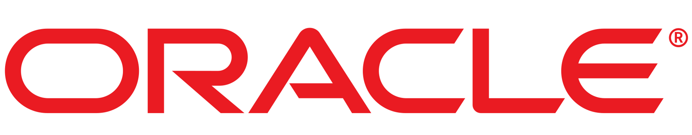

Mi nombre es Mireya Esthefany Apaza Cuicapuza, tengo 17 años y soy de Arequipa, actualmente soy estudiante de TECSUP
que va cursando el 3er ciclo de la carrera de "Diseño y Desarrollo de Software", soy una chica dedicada a su carrera y con ganas
de aprender más poco a poco, tambien soy ordenada con mis cosas y muy comprometida con lo que hago, por mi parte prefiero
más los trabajos individuales que grupales pero igualmente trato de adaptarme y me gusta presentar mis trabajos bien hechos. Por
otra parte me apasiona dibujar, es una de las habilidades que poseo desde pequeña, y mi parte favorita es escuchar música, todo
tipo de música variada aunque tengo mis preferencias, el deporte que más practico es el voley.

En el caso de los lenguajes de programación, los que más domino son:
- Oracle - SQL Developer - Phython Como anteriormente lo mencioné, soy estudiante de tecsup que va cursando la carrera de Software, asi que mi formación profesional
dependería de eso, en un futuro seré una Ing. de Sistemas, mientras tanto ire recaudando conocimiento y prácticas a travéz del estudio.

En el idioma, el único que domino es el castellano, mi idioma natal, pero mi carrera consta tambien de aprender inglés por lo
cual comenzaré a tomar clases de ese idioma este año.